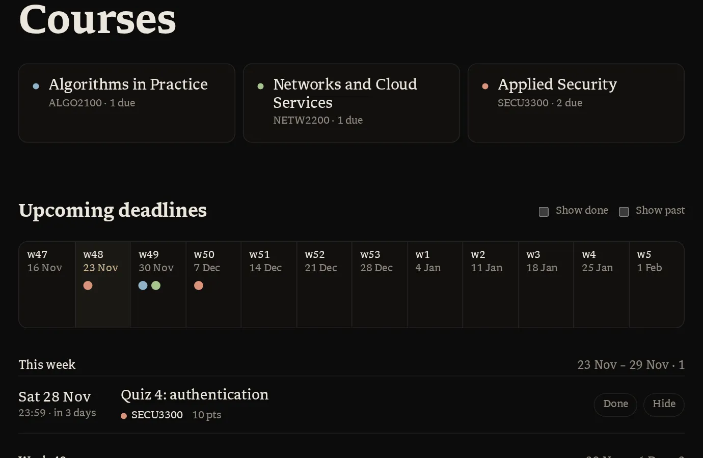
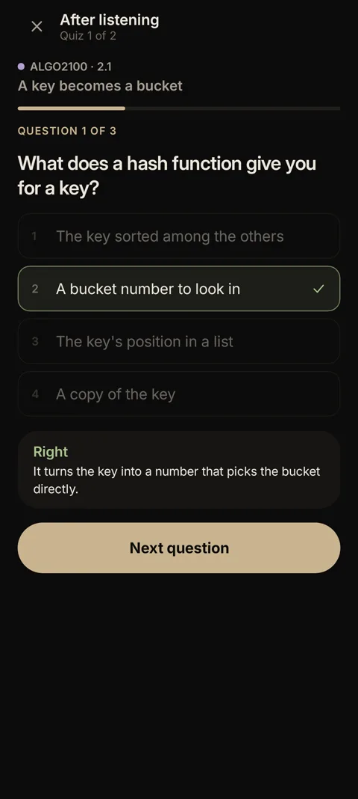
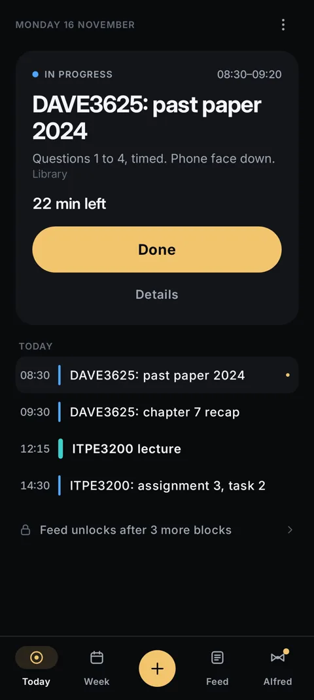
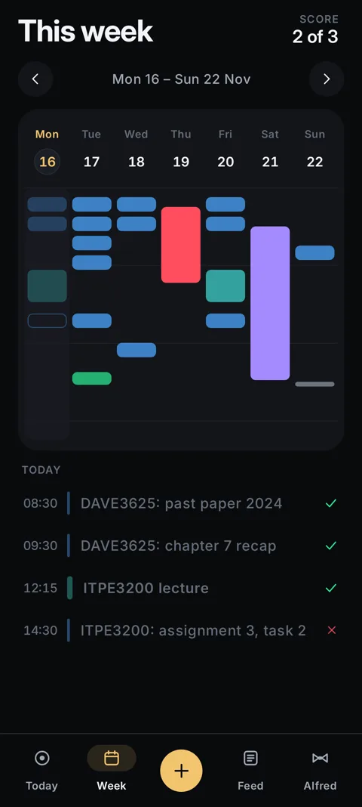
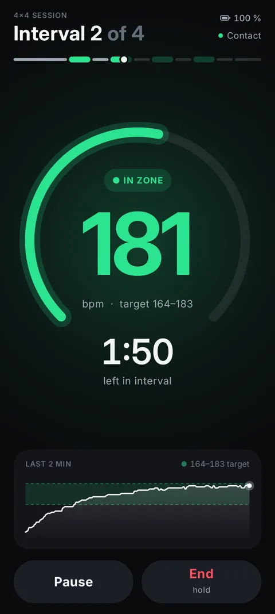
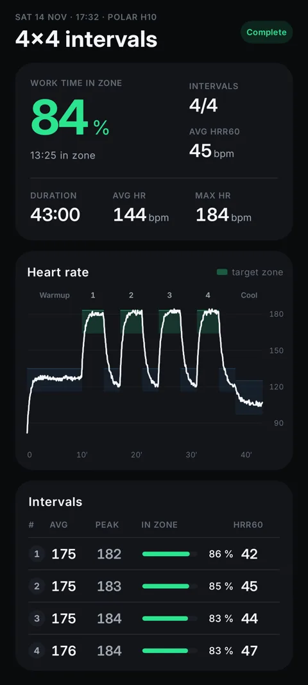
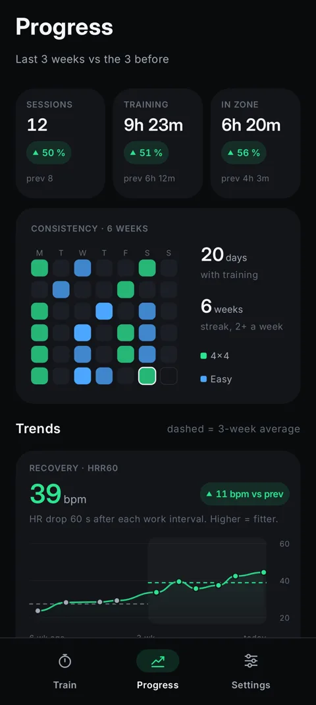

Oslo, Norway · graduating summer 2027
Haakon Meyer Tischbein
I'm in my last year of Applied Computer Technology at OsloMet. Next to my studies I've built four apps that I use every day, and I run the server they live on.
I'm looking for a full-time job in DevOps, platform or backend engineering from summer 2027.
What sets me apart
- My projects are in production. All four apps run on a VPS that I look after myself. Deploys go through CI with a health check, and roll back if it fails. The containers are locked down and can only be reached through a Cloudflare tunnel.
- I use what I build. stud is how I studied for my exams this autumn. alfred plans my days and pulse coaches my runs. sjekka is the one that's open to everyone.
- I build with AI, and I'm open about it. Claude wrote most of the code in these apps. I decide what gets built and how it's put together, and I review what comes back. I've written up how I work.
- I've had jobs where people depended on me. In the army I was the battalion representative for 140 conscripts. After that I worked nights in a dementia unit.
Experience
- 2026
- Volunteer, IT group, Øyafestivalen. Helped set up the festival network: switches, antennas and mostly cabling.
- 2023 – now
- On-call care assistant, Oslo Municipality. At Vinderenhjemmet nursing home, next to my studies.
- 2023
- Care assistant, Åmot Municipality. Full-time in the dementia unit at Ryslingmoen, mostly on night shifts.
- 2019 – 2020
- Norwegian Armed Forces, Army Medical Battalion. Battalion representative for 140 conscripts, full-time, and operations assistant at command headquarters. I was promoted to Leading Private.
- 2017 – 2021
- UCO Kjeller. Assembled and maintained modular buildings. Full-time for six months in 2021, and during school holidays before that.
Education
- 2024 – 2027
- BSc Applied Computer Technology, OsloMet. Data Networks and Cloud Services, Operating Systems, Software Testing, Computer Security, Java programming, Interaction Design.
Skills
- Infrastructure
- Linux, Docker, Nginx, systemd, Cloudflare Tunnel and Access, GitHub Actions, cloud‑init
- Languages
- Python, Java, Kotlin, C#, JavaScript, Bash, SQL
- Frameworks
- FastAPI, Spring Boot, ASP.NET Core, Jetpack Compose, React
- Spoken
- Norwegian, English
Also built
- dotfiles ↗ My Hyprland setup, shared between two machines. It keeps track of installed packages and routes app audio into screen shares.
- pi ↗ A Raspberry Pi set up with cloud-init. It runs a few Docker services and a stats API, and reboots itself if the tunnel stays down.
- kolllektiv ↗ A chore rotation for the flat I shared. It ran on a tablet taped to the fridge.
live Web app · public
sjekka
Why I built it
I'm a student and money is tight. I wanted to compare my shopping lists across shops and see where it's actually cheapest.
You take a photo of a grocery receipt and the prices go into a shared database. Then you can look up what things cost in which shop.
sjekka.tischbein.dev ↗- Photoof a receipt
- ReadGemini, against a strict schema
- Queueretries, duplicates, unit prices
- Pricesone shared database
- Gemini has to answer in a fixed format. If a reading doesn't fit, it's thrown out and tried again, so bad data doesn't end up in the database.
- CI deploys it to my server, checks that it's healthy and rolls back if it isn't.
Built with Claude Code. Here's how I work with it.
in daily use Web + Android · private
stud
Why I built it
Every lecturer uses Canvas in their own way, and it's a mess. I got tired of hunting for files and deadlines, so I wanted all my courses to look the same.
stud pulls everything from my Canvas courses once an hour, keeps a copy of the files and sorts them into the same folders for every course. It also puts all the deadlines on one timeline. Later I added a daily study session and short audiobook chapters with a quiz after each one.




The screenshots show made-up courses. The real one is behind Cloudflare Access.
- Canvasevery course, hourly, read-only
- Mirrorfiles kept, hidden ones too
- Sortrules first, Claude for the rest
- Studydaily session, cards, mock exams
- Listenspoken chapters, then a quiz
- It fetches assignments, modules, files, pages and announcements from Canvas. It also finds files that are only linked from inside a module or a page, and it keeps its copy if the lecturer removes something.
- Some deadlines only exist as a sentence in an announcement. Claude reads those and adds them to the timeline, marked as inferred, with the sentence shown next to them.
- If Claude is down or the monthly budget is used up, the sync still runs and the sorting falls back to plain rules.
- Claude can read the same material through a read-only MCP server, which is how I ask questions about my own syllabus. The Android app works offline.
Built with Claude Code. Here's how I work with it.
in daily use Android + backend · private
alfred
Why I built it
I wanted less to think about. Figuring out what to do next takes energy, and I'd rather spend it on doing what needs to be done. With Alfred I can just get to work.
Alfred is a personal boss. It plans my week around exams, work and training, and reminds me when a block starts. My news feed stays locked until the day's blocks are done.



The screenshots use demo data.
- Stateone database
- Rulesplanning as plain code
- LLM jobsintake, briefing, quizzes
- Phonecached plan, its own alarms
- It all works with the language model turned off. The plan is made by normal code. The model only helps with the wording and with reading what I type in.
- The app responds straight away, even when I'm offline. What I do is queued and sent to the server in the same order once the connection is back.
- It reads deadlines from stud and training from pulse, so I barely have to enter anything myself.
Built with Claude Code. Here's how I work with it.
in use Android + backend · open source
pulse
Why I built it
I didn't find the official apps very intuitive, and some of the features I wanted are behind a paywall. So I made my own.
pulse is an interval coach for the Polar H10 chest strap. It shows my heart rate live and tells me out loud when I'm outside the target zone. Afterwards I can see how the session went and whether I'm improving over time.



The screenshots use simulated sessions.
- StrapPolar H10 over Bluetooth
- Enginepure Kotlin, tested on simulated runs
- Coachvoice cues and live screen
- Syncto my server
- The coaching logic doesn't depend on Android, so a whole workout can be replayed in a test without a strap or a phone.
- It also copes with the boring problems, like the sensor dropping out, pausing, and the screen being off for most of a run.
Built with Claude Code. Here's how I work with it.
Method
How I build with AI
Claude wrote most of the code in these apps. I decide what to build and how it's put together, I review the work, and I run it in production. I'd rather be upfront about that.
- I write a brief first. Claude asks me questions before it writes any code, and my answers are saved as decisions.
- We work out the architecture together. Claude suggests a design, I push back, and I make the final call on the big things, like what should be its own app and what runs where.
- The app and the server agree on an API before anything is built. That way two agents can build each side at the same time.
- Each agent works in its own clone, on its own branch. Before anything is merged, the tests are run again in a fresh clone and the sensitive code is read.
- The rules are normal code with tests. The language model only gets small jobs where the output can be checked, and the apps still work without it.
- Deploys go through CI with a health check and rollback. There are backups, and a cap on what the AI is allowed to spend.